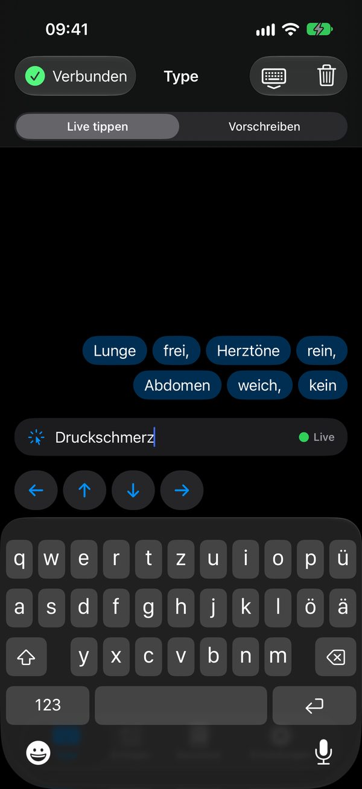
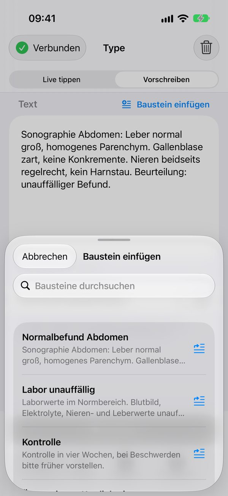
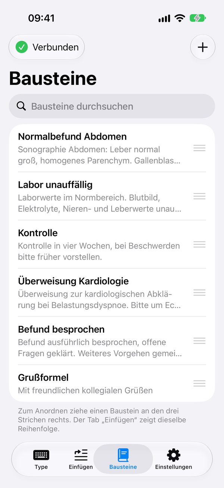
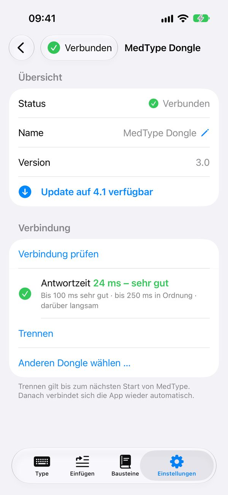
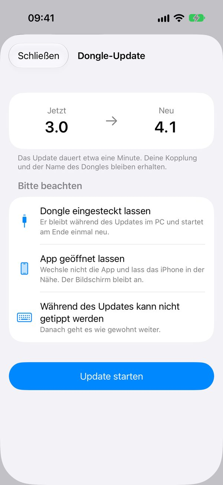

In drei Schritten
So funktioniert’s
-
Dongle in den PC stecken
Der MedType-Dongle meldet sich am Windows-PC wie eine normale USB-Tastatur. Installieren musst du dort nichts.
LED blinkt langsam blau: bereit
-
iPhone koppeln
Taste am Dongle 3 Sekunden halten, in MedType den Dongle wählen und die Kopplung bestätigen. Das machst du nur einmal – danach verbindet sich MedType von selbst.
LED blinkt schnell blau: Koppelmodus
-
Tippen
Klick am PC in das Feld, in das der Text soll, und schreib in MedType. Der Text erscheint genau dort, wo der Cursor steht.
LED grün: verbunden, flackert beim Tippen

Live tippen
Jeder Buchstabe erscheint sofort am PC.
Im Modus „Live tippen“ landet jede Eingabe sofort am PC-Cursor. Löschen und Enter wirken direkt dort, und die Pfeiltasten über der Tastatur bewegen den Cursor. Fertige Wörter wandern in einen Verlauf darüber – so behältst du den Überblick.
Du kannst auch vom iPhone aus diktieren: Nutze das Mikrofon der iPhone-Tastatur wie gewohnt, MedType tippt den diktierten Text am PC.

Vorschreiben
Erst in Ruhe schreiben, dann senden.
Schreib, korrigiere oder diktiere deinen Text in Ruhe. Mit „Baustein einfügen“ setzt du gespeicherte Texte direkt an die Cursorposition in deinem Entwurf.
Getippt wird erst, wenn du auf „Senden“ tippst. Du siehst den Fortschritt und kannst jederzeit abbrechen. Danach leert MedType den Entwurf – wenn du das nicht willst, schaltest du es ab.

Bausteine
Textbausteine mit einem Tipp am PC.
Leg eigene Textbausteine an, zum Beispiel Standardsätze, Grußformeln oder Adressen. Im Tab „Einfügen“ genügt ein Tipp, und MedType tippt den Baustein sofort am PC.
Die Reihenfolge legst du per Ziehen fest, und die Suche findet jeden Baustein schnell. Die Bausteine bleiben auf deinem iPhone – am PC brauchst du kein zusätzliches Programm.


Verbindung und Dongle-Updates
Verbindung im Blick, Updates per Bluetooth.
Gekoppelt wird einmal per Tastendruck am Dongle, danach verbindet sich MedType beim Start von selbst. „Verbindung prüfen“ zeigt dir auf einen Blick, wie schnell der Dongle antwortet.
Neue Software für den Dongle bringt die App gleich mit. Du spielst sie per Bluetooth auf, der Dongle bleibt dabei am PC. Und jeder Dongle bekommt auf Wunsch einen eigenen Namen, zum Beispiel „PC 1“ oder „Laptop“.
Außerdem an Bord
- Tippgeschwindigkeit einstellbar. So kommen auch langsamere Programme mit.
- Pause nach Zeilenumbruch. Für Programme, die nach Enter einen Moment brauchen.
- Vier App-Icons. Zur Wahl in den Einstellungen.
- Hell und dunkel. Im Hoch- und Querformat, mit VoiceOver bedienbar.
- Mehrere Dongles. Für mehrere PCs – gewechselt wird mit wenigen Tipps in der App.
- Demo-Modus. Zum Ausprobieren ohne Dongle.
Datenschutz
Keine Cloud, kein Konto, kein Server.
- Auf deinem iPhone. Bausteine und Entwürfe bleiben auf deinem Gerät. MedType hat keinen Server und braucht kein Internet.
- Nur an deinen Dongle. Texte gehen per Bluetooth verschlüsselt an deinen eigenen Dongle. Nach dem Koppeln nimmt er nur noch dein iPhone an und speichert keine Texte dauerhaft.
- Nichts landet bei uns. Keine Werbung, kein Tracking, keine Analyse. Wir bekommen nichts von dem, was du schreibst.
Voraussetzungen
Das brauchst du
-
iPhone oder iPad
mit iOS 17 oder neuer und eingeschaltetem Bluetooth.
-
MedType-USB-Dongle
Steckt direkt am PC. Du brauchst einen? Schreib uns.
-
Windows-PC mit deutscher Tastaturbelegung
QWERTZ, Sprache „Deutsch (Deutschland)“. Installieren musst du am PC nichts, und Bluetooth braucht er nicht.
Kein Konto, kein WLAN, kein Internet nötig. Ohne Dongle probierst du MedType im Demo-Modus aus: Einstellungen › Demo-Modus.
Fragen?
Du möchtest MedType nutzen, brauchst einen Dongle oder hast eine Frage? Schreib uns.
bironleonard5@gmail.comViele Antworten stehen schon in der Hilfe. Bitte schick uns keine vertraulichen oder personenbezogenen Daten – auch nicht in Bildschirmfotos.